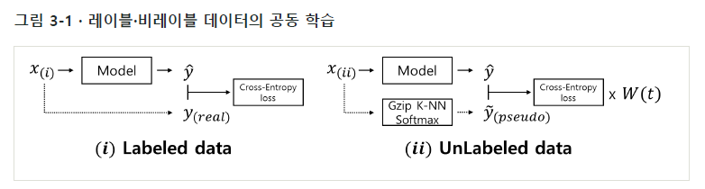
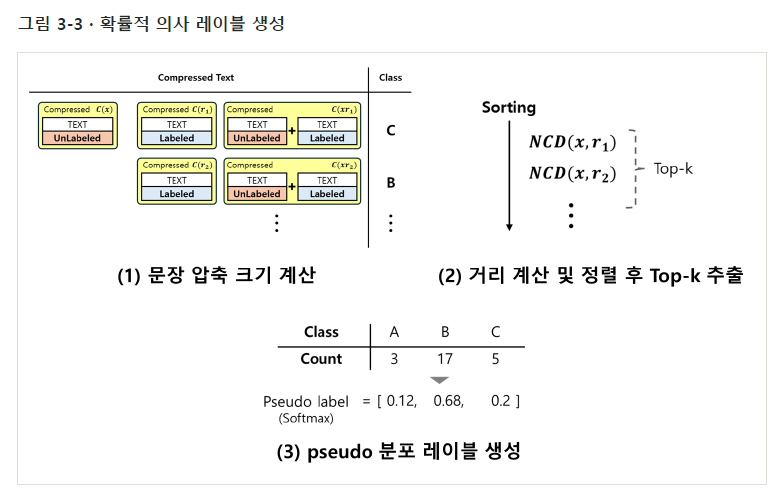
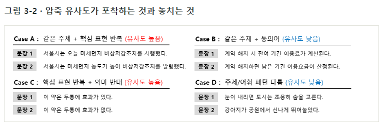

문장을 직접 변형하는 대신 Gzip 압축 길이로 문장 간 유사도를 계산합니다. 비레이블 문장과 가까운 K개 참조 문장의 클래스 분포를 확률적 의사 레이블로 만들고, 실제 정답 데이터와 함께 모델 학습에 활용합니다.


석사학위논문 · 2026.08
압축 기반 유사도로 의사 레이블을 생성해, 소량의 정답 데이터와 비레이블 데이터를 함께 학습하는 한국어 문장 분류 방법.
문장을 직접 변형하는 대신 Gzip 압축 길이로 문장 간 유사도를 계산합니다. 비레이블 문장과 가까운 K개 참조 문장의 클래스 분포를 확률적 의사 레이블로 만들고, 실제 정답 데이터와 함께 모델 학습에 활용합니다.


C(x)는 문장 x의 Gzip 압축 길이, C(xr)는 두 문장을 이어 붙여 압축한 길이입니다. NCD가 작은 문장을 가까운 이웃으로 선택합니다.

W(epoch)는 의사 레이블의 반영 비중입니다. 학습 전 구간에 같은 비중을 적용하거나, 학습이 진행되면서 줄이는 설정을 비교했습니다.
KLUE-YNAT·NSMC·K-MHaS의 3개 데이터셋과 8개 모델에서 검증 Macro-F1을 비교했습니다. 클래스별 정답 5개와 비레이블 250개를 사용하고, 같은 정답 데이터만 학습한 Baseline과 비교했습니다.
| 데이터셋 · 모델 | Baseline | 비교 최고값 | F1 차이 |
|---|---|---|---|
| KLUE-YNAT · RoBERTa-large | 0.614 | 0.646 | +0.032 |
| KLUE-YNAT · Gemma 3 1B | 0.165 | 0.255 | +0.090 |
| NSMC · RoBERTa-large | 0.631 | 0.669 | +0.038 |
| NSMC · Qwen3 1.7B | 0.602 | 0.664 | +0.062 |
| K-MHaS · RoBERTa-large | 0.316 | 0.349 | +0.033 |
| K-MHaS · Gemma 3 270M | 0.074 | 0.090 | +0.016 |
일부 설정에서 Baseline보다 높은 Macro-F1이 관찰됐으며, 최적의 의사 레이블 가중치는 모델·데이터셋에 따라 달랐습니다.
비교 최고값은 모델·데이터셋별 설정 중의 값이며, F1 차이는 절대 점수 차이입니다. 모든 설정에서의 개선을 뜻하지 않습니다.